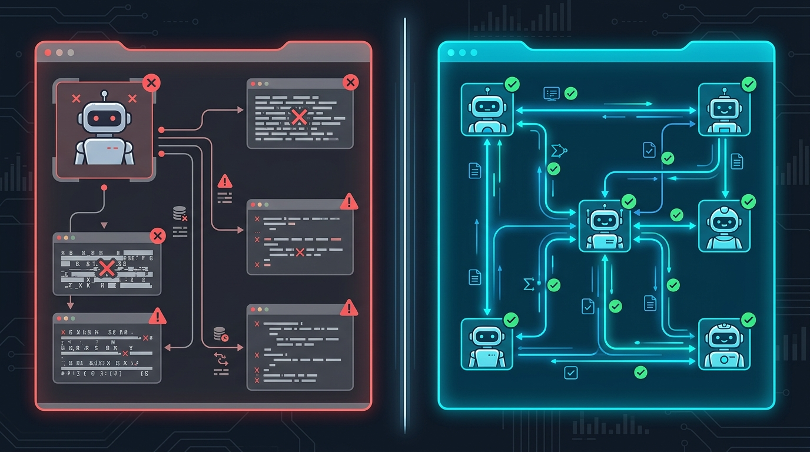

A production multi-agent system powered by LangGraph, ChromaDB Vector RAG, NCBI PubMed Live APIs, and the Model Context Protocol (MCP). 10 specialized AI agents bridging the gap between 18 complex patient biomarkers and multidisciplinary clinical consensus.
Patient records, pathology slides, blood panels, and genetic biomarkers (BRCA1/2, KRAS, Lynch) reside in disconnected hospital systems. Oncologists spend 40%+ of patient review time manually gathering history.
Calculating 10-to-30-year risk requires synthesizing lifestyle exposures, environmental carcinogens, genetics, and comorbidity indices — impossible during a 15-minute consultation.
Aggressive chemo regimens trigger fatal ADRs (e.g. Tamoxifen + CYP2D6 inhibitors). Dumping 10 lifestyle changes at once causes 70%+ patient dropout.
Commercial monolithic LLMs invent realistic-sounding PubMed PMIDs, fail token budgeting, and converge on generic averages. In cancer care, ungrounded AI is unacceptable.
Healthcare systems face severe bottlenecks delivering proactive cancer care due to:

Collates 5-cancer trajectory curves, verifies consensus math from Tumor Board, enforces token budget, and synthesizes the final clinical report.
Validates Pydantic schema, creates health index (0–100), instantiates DigitalTwinState.
Calculates baseline empirical hazard models across Lung, Breast, CRC, Prostate, Liver.
Simulates 10–30 year counterfactual risk divergence trajectories for intervention targets.
Scores friction (0–10 burnout), blocks drug collisions (DDIs), stages Phase 1 & 2.
Audits trial spin, control arms, assigns GRADE evidence scores to eliminate hallucinations.
Synthesizes holistic 5-cancer trajectory recommendations under strict Gemini token budget.
Orchestrates 3-round specialist oncology debate and adjudicates final mathematical consensus.
Defends systemic chemo, targeted therapies, immunotherapy sequencing, and circulating ctDNA.
Evaluates anatomical resectability, R0/R1 margins, perioperative morbidity, surgical feasibility.
Targets SBRT/EBRT stereotactic field bed sterilization and monitors critical organ toxicity.
Each specialist (Surgical, Medical, Radiation Oncologist) presents their independent treatment strategy. The Surgical agent calculates R0 margin feasibility, the Medical agent proposes adjuvant chemotherapy sequences, and the Radiation agent defines SBRT field boundaries.
Specialists challenge each other's proposals: surgery debates perioperative risk vs. radiation's toxicity profiles. The Scientific Skeptic audits supporting trial evidence for pharmaceutical bias and spin.
The TB Supervisor mathematically adjudicates: weighted-confidence scoring across all specialists produces a final relapse probability, optimal modality recommendation, and staged treatment timeline.
100+ curated clinical guidelines from USPSTF, NCCN, WCRF, and IARC — embedded as dense vectors using Gemini embeddings. Every risk assessment query retrieves the top-k most relevant evidence chunks, ensuring recommendations are grounded in peer-reviewed standards.
Real-time Phase 3 clinical trial searches via NCBI E-Utilities (esearch + esummary). Rare genetic variants (BRCA1/2, KRAS, Lynch) trigger specialized literature lookups with caching to minimize API calls and latency.
The adversary agent verifies every retrieved trial: checks for pharmaceutical funding bias, validates control arm design, inspects hazard ratio confidence intervals, and assigns GRADE evidence quality scores (A/B/C/D). Fabricated or low-quality evidence is rejected.
When ChromaDB or PubMed API is unavailable, the system gracefully degrades to a curated local JSON guideline store (raw_guidelines/). Zero downtime — the clinical pipeline never breaks.
Intake → Risk Assessment → What-If Simulation → Feasibility & Safety → Scientific Skeptic → Coordinator. Strictly sequential, Pydantic-typed state transitions guarantee reproducibility.
Surgical, Medical, and Radiation oncologists enter 3-round cross-examination. The Supervisor adjudicates mathematical consensus when confidence thresholds converge.
All agents share a Pydantic v2 strongly-typed state object containing 18 biomarkers, risk scores, trajectory curves, intervention plans, and evidence citations. No data loss between hops.
Each agent operates under strict input/output token limits. The Coordinator enforces a final synthesis budget of 2048 tokens, preventing cost overrun while maintaining clinical depth.
The mcp_server.py exposes every CancerTwin agent as a discoverable MCP tool. External AI clients (Claude Desktop, Cursor IDE, Hospital EHR Chatbots) can invoke any agent directly via JSON-RPC stdio protocol.
Doctors will ask plain natural-language queries without adjusting sliders. The MCP foundation enables any AI client (Claude Desktop, hospital chatbots) to invoke CancerTwin agents directly via JSON-RPC.
Upload scanned pathology, blood panels, and genomic PDFs — vision models extract all 18 biomarkers automatically. Plus automated factor attribution: "Radon + smoking drove lung hazard ratio by +4.2x".
In silico clinical trials, federated learning across multi-hospital networks, and FHIR/HL7 real-time Epic/Cerner integration for live patient data ingestion.
10 Domain Specialist Agents • LangGraph Orchestration • Dual-Store RAG • Model Context Protocol Native. Delivering precision oncology decision support with mathematical verifiability and safety.